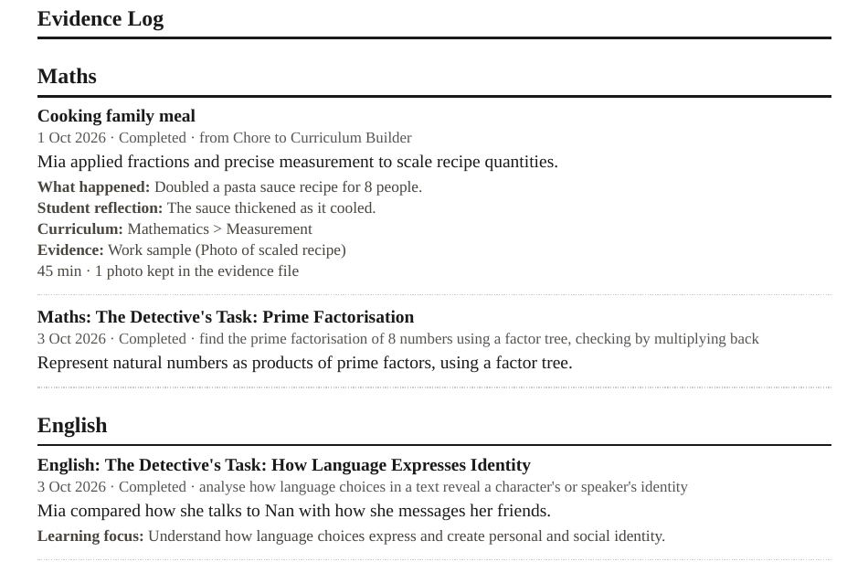

Frequently asked questions
Straight answers about how Wattlewood and the free tools work. If your question isn't here, send me a message.
Getting started
Can I try Wattlewood before I buy?
Yes. The free preview is one sample week of Wattlewood for Year 1-2, 3-4 or 5-6, with 20 tasks per year level, six themes, difficulty levels and an evidence report. Get the free preview on Payhip (opens in a new tab) It works offline, and Chrome or Edge work best.
I'm new and overwhelmed. Where do I start?
Start with the Start here page. Pick your state or territory for the first things to do and the official pages to read, then try the free preview and the free Plan Builder and Registration Pack. You don't need to buy anything to take those first steps.
How offline files work
Do I need the internet to use Wattlewood?
Only to download it. After that, Wattlewood runs on your own device with no account, no login, no cloud and no tracking, so it works with the internet switched off.
Which browser and device do I need?
Chrome or Edge work best. Wattlewood is a file you download and open in your browser.
On an iPad or iPhone, Safari can't open a downloaded HTML file, so families there use Microsoft Edge.
Where does my child's information go?
It stays on the device you use. A child's information doesn't leave the device unless you choose to export or print it.
Because it's saved on that device, it won't appear on a different device or browser by itself. Clearing your browser's saved site data could also remove it, so use Save Backup File in Wattlewood regularly (Parent Corner > Import & Data), and print or save your reports from Parent Corner too. See "How do I back up Wattlewood, or move it to a new device?" below.
How do I back up Wattlewood, or move it to a new device?
In Parent Corner, go to Import & Data and choose Save Backup File. The backup holds every child's profile, progress, evidence, learning hours and archived terms. Year Pack files are not included. The file is named Wattlewood-backup- followed by the date.
To restore, go to Parent Corner > Import & Data and choose Restore From Backup. Restoring replaces everything in Wattlewood on that device.
On a new device, set up a child first so you can reach Parent Corner. Then restore your backup, and then import your Year Pack files again.
How offline files work, in five steps
- Download. You buy or collect a product on Payhip, which needs the internet. The free preview arrives as an HTML file and a TXT file.
- Save it somewhere you can find it. Keep the file in a folder on your computer or tablet.
- Open it in Chrome or Edge. Opening the HTML file starts the app in your browser, straight from the folder.
- Use it with the internet off. There's no account or login, and nothing is sent to the cloud.
- Your work stays on that device. In Wattlewood, use Save Backup File (Parent Corner > Import & Data) as you go, and print or save your reports, so you have a copy outside the browser.
Buying
Is it a subscription?
No. Everything is a one-time purchase, delivered as a download through Payhip. There are no subscriptions.
What does it cost?
All prices are in Australian dollars. Wattlewood is from A$195. Year packs are A$139 each, and Wattlewood Complete (the app, one year pack of your choice - Year 1-2, Year 3-4 or Year 5-6 - two Hollow modules and Field Notes) is from A$259. Plan Builder, Registration Pack and the free preview are free. The shop page lists everything with its price.
What do I need to buy to get a full year of work?
Year packs are separate downloads, and they need Wattlewood to run. Each pack is 40 weeks and 800 tasks. Please read the product page on Payhip to see exactly what each product includes before you buy.
What if something goes wrong, or I want a refund?
Our products are digital downloads, so we can't take them back once downloaded. We want you to be happy, so please try the free Wattlewood Preview first. If a file doesn't work, doesn't match its description, or you were charged by mistake, contact us through the contact page and we'll make it right, including a refund where appropriate. Nothing here limits your rights under the Australian Consumer Law. Payments are processed securely through Payhip and PayPal.
Can I use it for more than one child?
Wattlewood supports more than one child. For questions about how many devices you can use it on, please check the product page on Payhip or send me a message before you buy.
Evidence and registration
Will my registering authority accept the evidence?
I can't promise that, and nobody else can either. Your registering authority decides what it accepts. What Wattlewood does is record what your child actually did, with dates, in plain, factual wording, so you have something real to present. Check what your state or territory asks for on the Start here page and with your registering authority.
What does an evidence entry look like?
It depends on the tool. The Chore-to-Curriculum Builder and the practice tools export entries that describe one real learning activity: a short formal summary, the parent's description in plain words, a curriculum line, an evidence type such as a photo, and the child's own reflection if they gave one. If a child wrote nothing, that field stays empty.
A Wattlewood task record has a title (the subject, the theme's task name and the lesson name), the date, "Completed", and the wording of the level your child worked at. Its summary is your note if you typed one; if you didn't, it is the task's learning objective, and when you did type a note the objective shows beneath it as "Learning focus". It has no child reflection, photo or curriculum code. For NSW and Tasmania only, each record also has an optional box where you can type a syllabus outcome code; the app never fills it in.

(opens the full-size image in a new tab)See the made-up examples, each marked "Example only", and a full report on the example evidence entries page.
What can I do with the evidence?
Parent Corner in Wattlewood has evidence reports, term reports, certificates and learning hours. You can print or save them, and use Save Backup File to keep a copy of your Wattlewood data. Import Evidence (Parent Corner > Import & Data > Choose Evidence File) reads evidence files exported by the other tools, such as the Chore-to-Curriculum Builder and the practice tools. You pick the child and tick the records you want, and nothing is saved until you confirm. Photos are not copied in: each record notes how many photos it had, and you keep the file. A phone page called Field Notes lets you log an excursion and pass it to Wattlewood or Sapling by QR code or sync code.
Is this legal advice?
No. Everything on this site is general information. Registration rules differ between states and territories and change over time, so always check with your registering authority. AHH is not a government body. The 28 Days guide is also not legal advice.
Curriculum and year levels
Which curriculum does it follow?
The Australian Curriculum v9.0. Wattlewood has Maths, English, Science and Geography, and the History, Civics and Citizenship, and Economics and Business content sits under the Geography tag, with each task naming the real subject. Wattlewood follows the Australian Curriculum. NSW families must base their program on NESA syllabuses (see the Start here page), so NSW parents should map Wattlewood's work to the NESA syllabuses. Whatever your state, check what your registering authority asks for.
Which year levels are covered?
Year packs are available for Year 1-2, Year 3-4 and Year 5-6. Year 7 and above aren't available as year packs. Maths Teach Then Do covers Years 1-10. Content for Years 11 and 12 isn't offered, because senior certificates are specific to each state.
My child finds school hard. Will this be too much?
Every task has Support, Core and Extension levels. Your child's level never changes by itself: the app can suggest a change, and you confirm it. Wattlewood works on your own device and your own schedule, so you decide what to do on any given day.
Check with your registering authority. This site gives general information and is not legal advice. Your registering authority makes decisions about your registration.